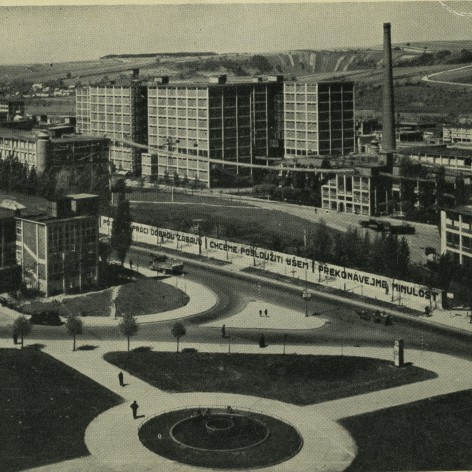

DĚDICTVÍ, KTERÉ FORMOVALO GENERACE
Baťova škola práce byla výjimečným vzdělávacím projektem, který spojoval praxi, morální výchovu a podnikatelského ducha. Založená Tomášem Baťou v roce 1925, formovala generace mladých lidí, kteří se učili nejen řemeslu, ale i odpovědnosti a charakteru. Dnes si připomínáme její odkaz v moderním duchu – jako inspiraci pro současnost i budoucnost.
Baťova škola
Baťova škola práce byla jedním z nejodvážnějších a nejprogresivnějších vzdělávacích projektů první poloviny 20. století. Založena v roce 1925 Tomášem Baťou ve Zlíně, spojovala odborné vzdělávání s každodenní praxí v prostředí Baťových závodů. Jejím cílem nebylo jen vychovat zručné řemeslníky a techniky, ale především charakterově silné a samostatné osobnosti – budoucí podnikatele, vedoucí pracovníky a občany se smyslem pro odpovědnost, pořádek a službu společnosti.
Výuka ve škole byla postavena na principech práce, disciplíny, morálky a sebekázně. Studenti bydleli v internátech, účastnili se ranních cvičení, kulturních akcí i praktických směn ve firmě. Výchova byla komplexní – kombinovala rozvoj duševní, fyzický i morální. Každý student byl veden k tomu, aby přemýšlel samostatně, jednal poctivě a byl připraven nést důsledky svých rozhodnutí. Tomáš Baťa věřil, že charakter člověka je stejně důležitý jako jeho dovednosti – a podle toho byla škola koncipována.
Baťova škola práce vychovala tisíce absolventů, kteří později zastávali důležité pozice v průmyslu, obchodu i ve veřejném životě. Její model se stal inspirací pro vzdělávací systémy v zahraničí a její filozofie zůstává dodnes aktuální. Tento web je vzpomínkou i poctou jedinečné instituci, která spojila ideály s každodenní praxí a zanechala trvalou stopu v dějinách českého školství i podnikání.